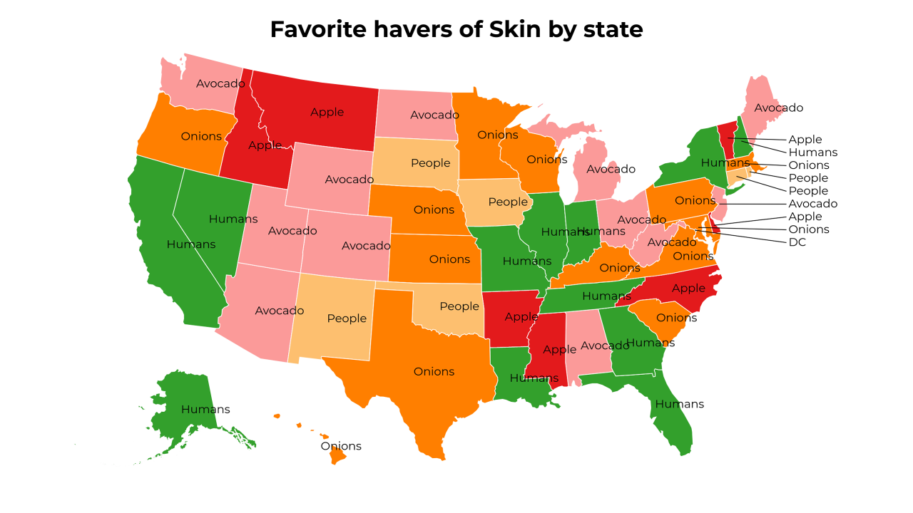
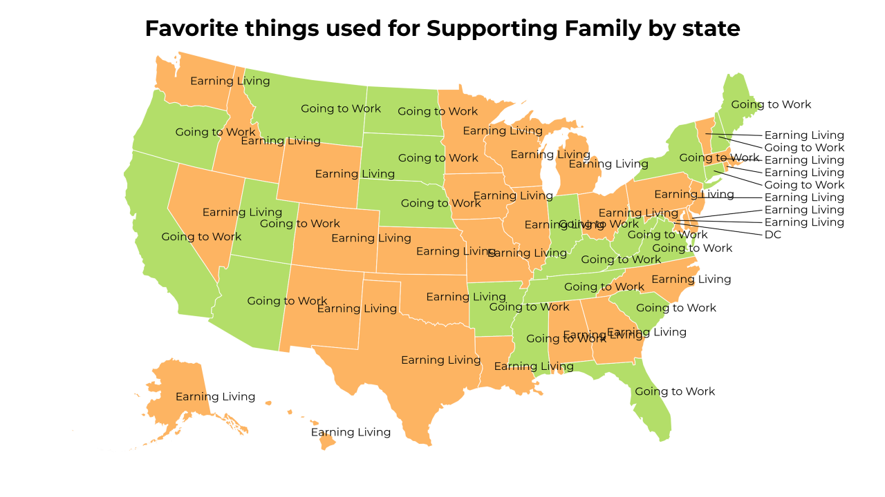
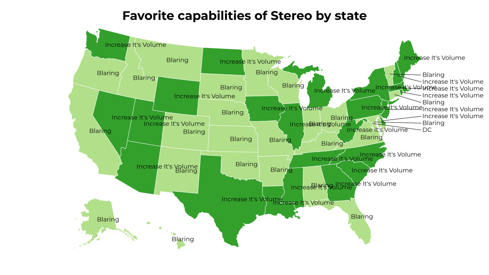
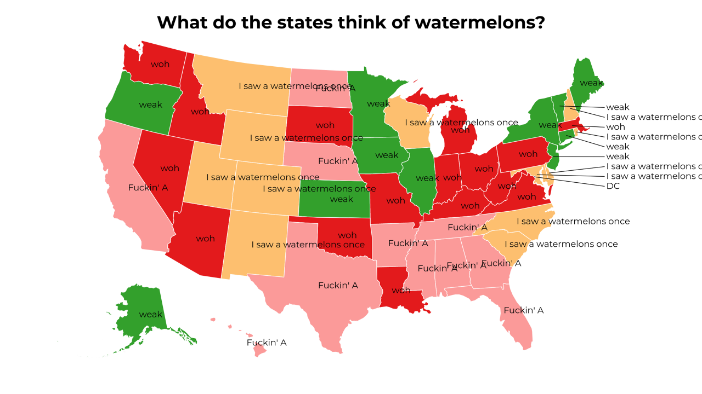
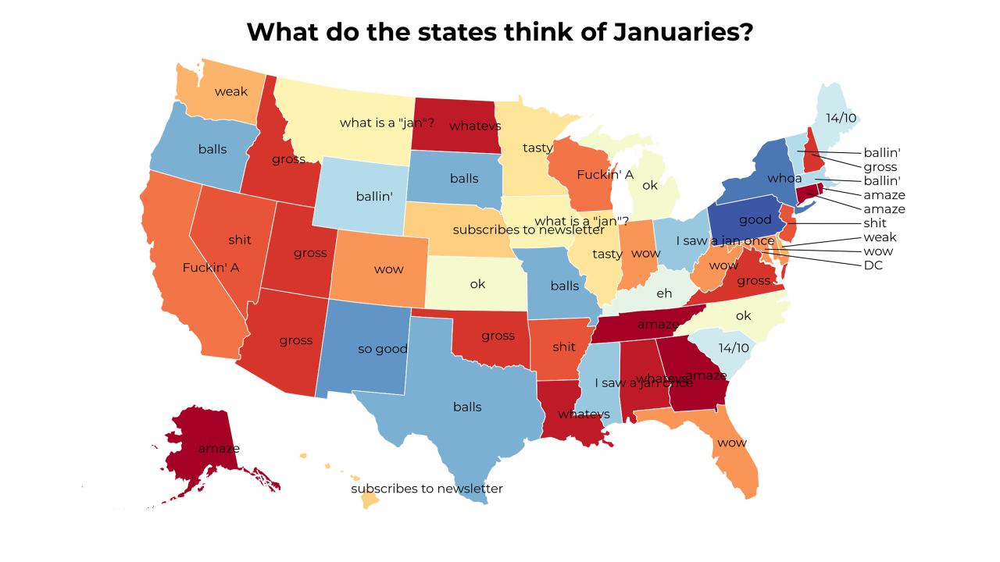
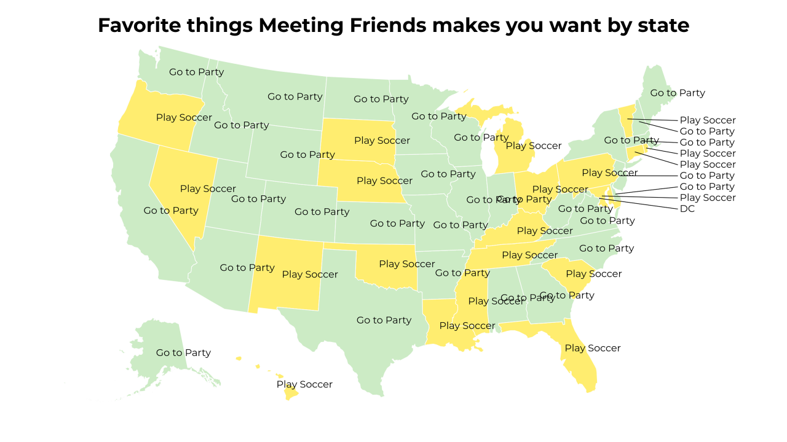
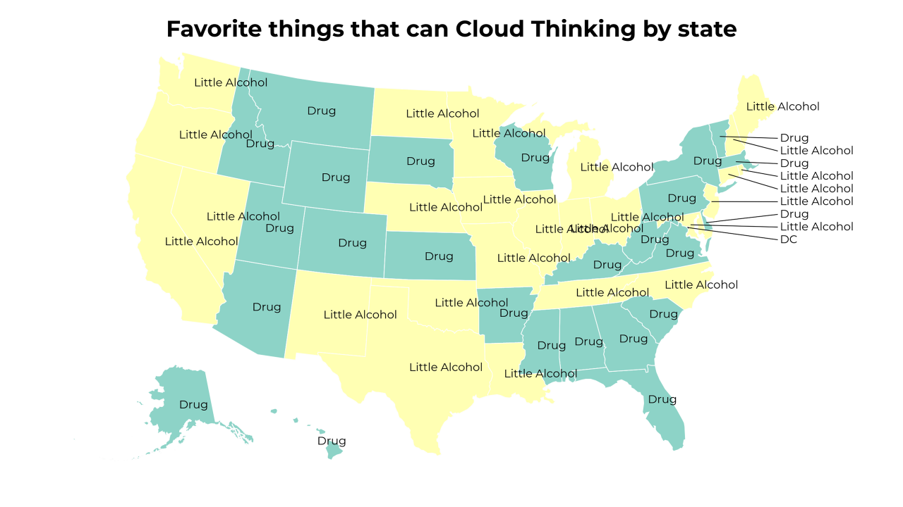
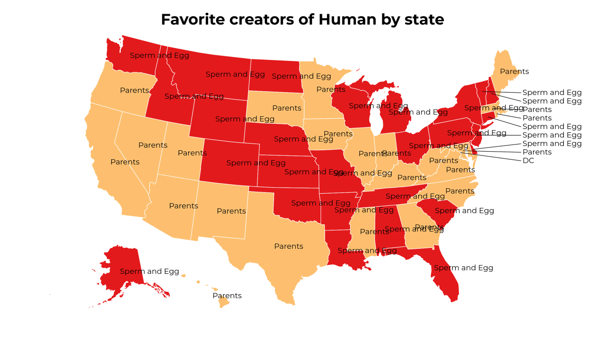
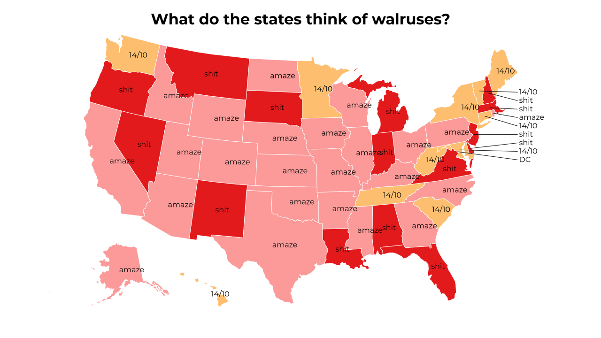
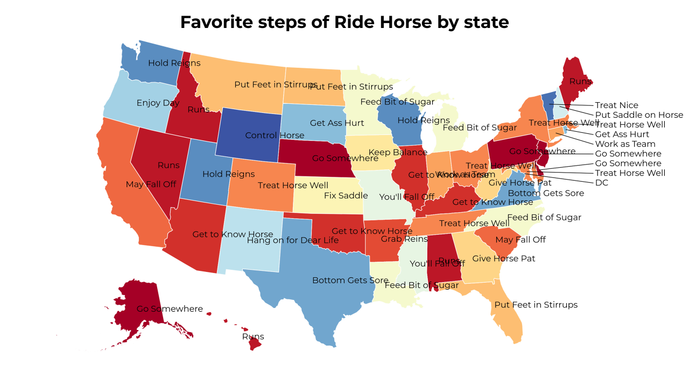

A Land of Contrasts
2018-5-16 02:30:16

Favorite havers of Skin by state
2018-5-15 23:30:17

Favorite things used for Supporting Family by state
2018-5-15 20:30:17

Favorite capabilities of Stereo by state
2018-5-15 17:30:16

What do the states think of watermelons?
2018-5-15 14:30:16

What do the states think of Januaries?
2018-5-15 11:30:16

Favorite things Meeting Friends makes you want by state
2018-5-15 08:30:16

Favorite things that can Cloud Thinking by state
2018-5-15 05:30:16

Favorite creators of Human by state
2018-5-15 02:30:16

What do the states think of walruses?
2018-5-14 23:30:17

Favorite steps of Ride Horse by state
23
|
22
|
21
|
20
|
19
|
18
|
17
|
16
|
15
|
14
|
13
|
12
|
11
|
10
|
9
|
8
|
7
|
6
|
5
|
4
|
3
|
2
|
1
|
0